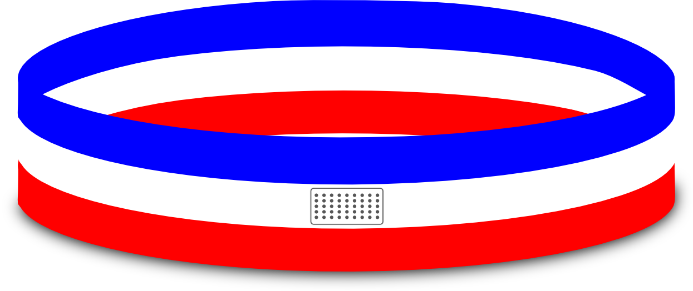

Producto Promocional
Descripción
Esta pulsera está diseñada para conmemorar a Juan Rafael Mora Porras, tiene un largo de 22 centímetros, tiene los colores de la bandera nacional y al frente tiene el nombre del expresidente costarricense, su fecha de nacimiento y muerte. En la parte trasera de la pulsera tiene un pequeño parlante que emite una grabación en donde se cuentan las grandes hazañas que conviertieron a Juanito Mora en héroe nacional.
Comparación
Luce como cualquier otra pulsera conmemorativa, pero con la cualidad de emitir una grabación que cuenta parte de la biografía de Juanito Mora cuando se presiona sobre el parlante, lo que la hace mas llamativa y pregnante.
Relación
Tiene la función de decorar una muñeca como toda pulsera y las de un pequeño parlante para emitir una grabación.
Análisis
Está compuesta solamente por una pulsera, un parlante y una batería de reloj para que tenga la energía de reproducir la grabación por un buen tiempo. Una ventaja sobre las pulsera conmemorativas normales es que con el parlante lo vuelve mas pregnante para quien la use y así sea mas fácil para la persona recordarlo.
Aplicación
La pulsera estandar es de 22cm para hombres promedio, sin embargo, también tiene versiones mas pequeñas para niños (16cm) y para mujeres (19cm) lo cuál la hace mas accesible. Se escogió la pulsera por que es fácil de portar y a las personas les llama mucho la atención y pensando en una manera de contar un poco de la vida de Juanito Mora se agregó el parlante que reproduce la grabación que cuenta sus hazañas mas importantes. La portabilidad de la pulsera la vuelve una ventaja ya que se puede andar en la muñeca, en el bulto, en el tobillo, etc, lo cual no la hace una molestia.
Argumentación
Es práctico, ligero, portable, contra agua, barato y patriótico, se puede usar en cualquier mano, su consumo de energía es muy bajo y la batería se puede cambiar.